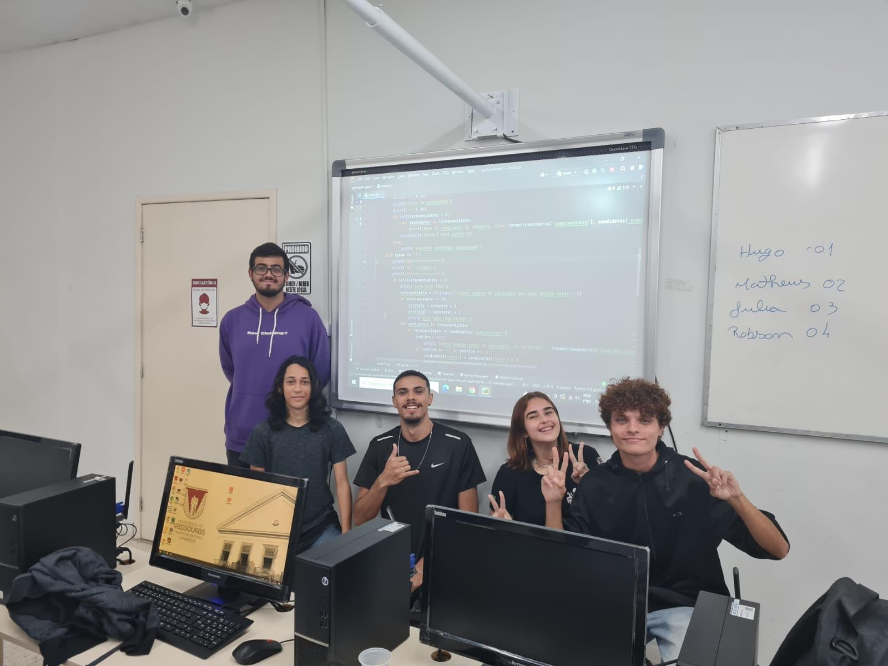

NOSSA HISTÓRIA
O AlphaVias começou a ser projetado quando seus desenvolvedores ainda na faculdade, em 2022, onde tiveram a ideia para fazer um trabalho, assim tiveram a ideia de um cadastro, algo que o paciente conseguisse ser identificado de forma rápida, prática e simples.
